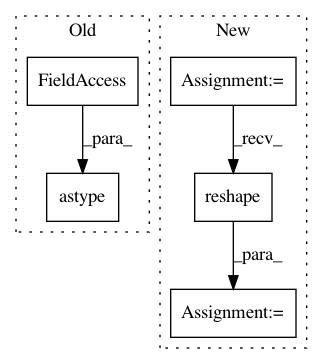

ea3d444d36853e38c0361d5091aa3b3f1aef5e0a,lib/pairwise_transform.py,,pairwise_transform,#Any#Any#Any#,108
Before Change
yc_batch[i] = crop_y[:, :, 0].reshape(cfg.ch, cfg.crop_size, cfg.crop_size)
elif cfg.ch == 3:
crop_x = crop_x.astype(np.float32)
crop_y = crop_y[top:bottom, top:bottom, :].astype(np.float32)
xc_batch[i] = crop_x.transpose(2, 0, 1).reshape(cfg.ch, insize, insize)
yc_batch[i] = crop_y.transpose(2, 0, 1).reshape(cfg.ch, cfg.crop_size, cfg.crop_size)
return xc_batch, yc_batch
After Change
elif cfg.ch == 3:
crop_y = crop_y[top:bottom, top:bottom, :]
crop_x = crop_x.transpose(2, 0, 1)
crop_y = crop_y.transpose(2, 0, 1)
patch_x[i] = crop_x.reshape(cfg.ch, insize, insize)
patch_y[i] = crop_y.reshape(cfg.ch, cfg.crop_size, cfg.crop_size)
return patch_x, patch_y
In pattern: SUPERPATTERN
Frequency: 3
Non-data size: 5
Instances
Project Name: tsurumeso/waifu2x-chainer
Commit Name: ea3d444d36853e38c0361d5091aa3b3f1aef5e0a
Time: 2017-01-01
Author: nstm101339@gmail.com
File Name: lib/pairwise_transform.py
Class Name:
Method Name: pairwise_transform
Project Name: mil-tokyo/webdnn
Commit Name: 892011b0b264d026d2fdb439580d82de393b5270
Time: 2017-04-21
Author: hidaka@mi.t.u-tokyo.ac.jp
File Name: example/convert_resnet/convert_resnet.py
Class Name:
Method Name: main
Project Name: scikit-learn/scikit-learn
Commit Name: e52e9c8d7536b6315da655164951060642a52707
Time: 2019-09-18
Author: tom.dupre-la-tour@m4x.org
File Name: sklearn/manifold/tests/test_t_sne.py
Class Name:
Method Name: test_binary_perplexity_stability